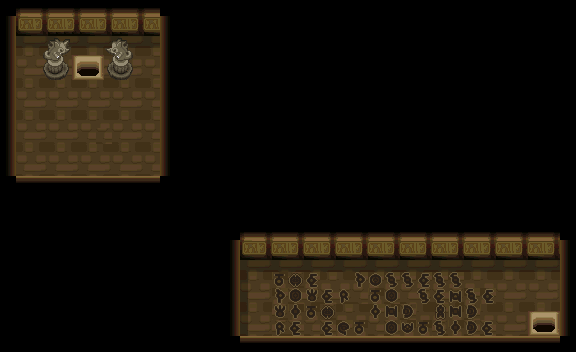
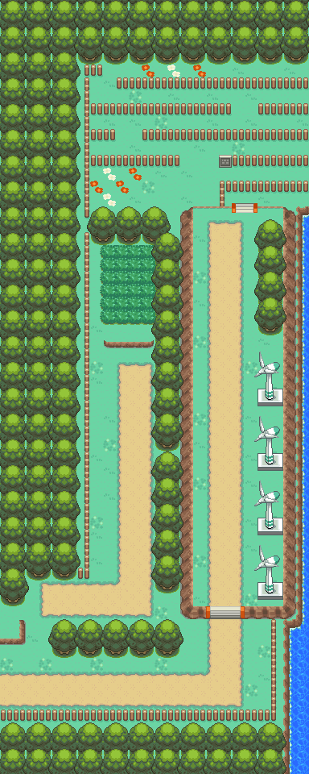

特防增强剂
宝可梦营养饮料。
获取：玉虹市·商店 ／ 满金市·商店 ／ 阿露福遗迹(5,15) ／ 14号公路(9,20) ／ 火箭队基地(38,16) ／ 桔梗市(18,17) ／ 阿露福遗迹(4,18) ／ 光辉灯塔(27,1) ／ …等 11 处
用途
宝可梦营养饮料。 提升1只宝可梦的10特防努力值。
标价 10000 口袋：道具
获取方式
购买
地面隐藏
- 阿露福遗迹（区域134） · (5,15) · 数量 1 · 地图｜静态图
- 14号公路（区域114） · (9,20) · 数量 1 · 地图｜静态图
- 火箭队基地（区域133） · (38,16) · 数量 1 · 地图｜静态图
人物剧情
- 桔梗市（区域145） · (18,17) · 与坐标处人物交互 · 数量 1 · 地图｜静态图 · 触发条件待补
- 阿露福遗迹（区域134） · (4,18) · 与坐标处人物交互 · 数量 1 · 地图｜静态图 · 触发条件待补 · 相同来源 2 条
- 光辉灯塔（区域186） · (27,1) · 与坐标处人物交互 · 数量 1 · 地图｜静态图 · 触发条件待补 · 相同来源 2 条
- 铃铛塔（区域135） · (18,23) · 与坐标处人物交互 · 数量 1 · 地图｜静态图 · 触发条件待补
- 冠军之路（区域132） · (31,3) · 与坐标处人物交互 · 数量 1 · 地图｜静态图 · 触发条件待补
- 寂静之丘（区域212） · (4,34) · 与坐标处人物交互 · 数量 1 · 地图｜静态图 · 触发条件待补
数据来源
- 来源文档：out/items.json（
/70） - 表索引 index 0070；内嵌 itemId 70；口袋 ITEMS (id=1)；type 1；hold_effect 0/0；importance 0；unk19 0
- 获取来源文档：encounters_research/out/shops.json、maps_research/out/events/events.json、maps_research/out/scripts/scripts.json
- 获取记录 ID：
shop:0816BCAC:4:10:4、shop:0816BCAC:4:50:17、hidden:1:53:12、hidden:3:32:1、hidden:56:45:2、script_item_candidate:std:081BEAC6:3:14、script_item_candidate:std:081BEB62:1:57、script_item_candidate:std:081BEB62:49:16、script_item_candidate:std:081BEB7C:1:60、script_item_candidate:std:087BED02:53:9、script_item_candidate:std:08EC4DB6:1:98 - 说明文字解码来源：
reference/SAVE_HOME_GAME_DATA.json.charmap
地点地图
共享RGB底图；点击可缩放定位。数字对应本页相关地点，不代表地图上全部事件。
玉虹市

1 特防增强剂（1,6）
满金市

1 特防增强剂（22,6）
阿露福遗迹

1 特防增强剂（5,15）
14号公路

1 特防增强剂（9,20）
火箭队基地

1 特防增强剂（38,16） 底图有8个图块缺少原始数据。
桔梗市

1 特防增强剂（18,17）